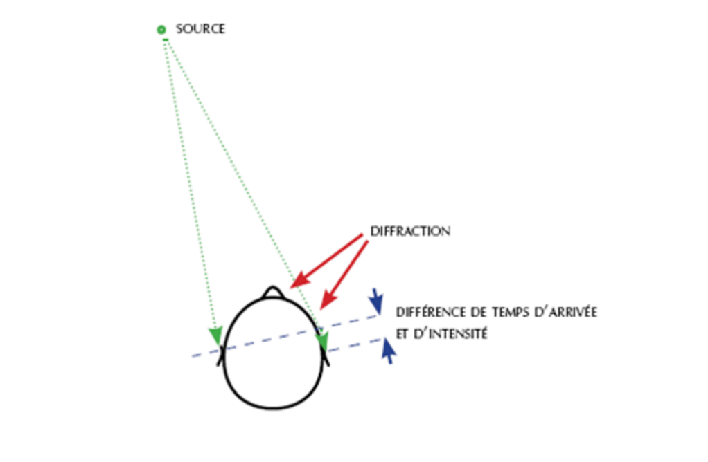
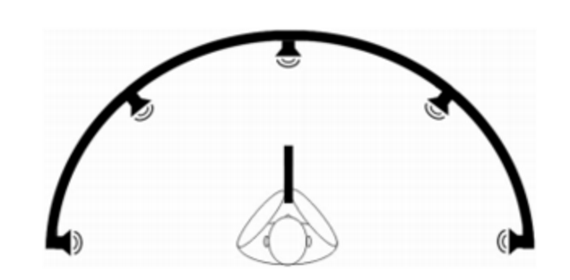
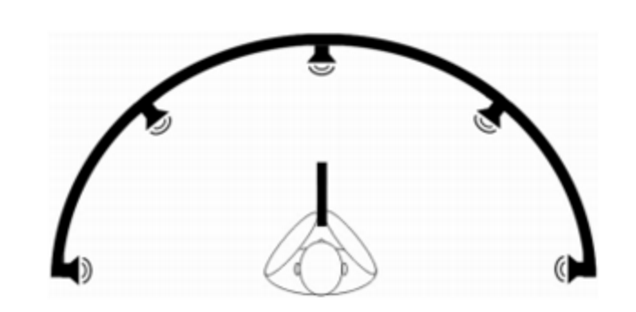

Qu'est ce que la spatialisation sonore?

Dans la vie courante, nos oreilles sont soumises à des sons spatialisés, c’est-à-dire des
sons qui viennent d’une source sonore mais qui se diffusent dans l’ensemble de l’espace.
On les entend donc avec nos deux oreilles. Pourtant notre cerveau a la capacité de
localiser les sources sonores.
En effet notre cerveau est capable de comparer les signaux arrivant à nos oreilles : il
analyse le décalage temporel et la différence spatiale. Posséder deux oreilles présente un
avantage considérable pour la localisation : du fait de la position des oreilles sur la tête,
un son n’arrive pas en même temps aux deux oreilles ce qui donne certains indices sur la
position de la source.
Cependant, des considérations géométriques simples montrent qu’il peut exister
plusieurs positions de source sonore donnant le même résultat à nos oreilles. Le cerveau
met alors en place des stratégies réflexes, comme le fait de bouger la tête : en fonction
de la modification du son perçu notre cerveau arrive à préciser la position de la source.
La différence d’intensité, elle,
donne des informations
directement sur notre distance
par rapport à la source : plus le
son est fort plus on en est proche
et plus il est faible plus on en est
loin.
Enfin, lorsqu’un son arrive sur le
pavillon de l’oreille, il est
partiellement diffracté. Il est de
même sur tout le corps humain.
La perception d’un son dépend donc de la forme de l’oreille et de la morphologie de la
personne considérée, ce qui peut poser problème lors de la spatialisation du son qui se
doit d’être « universelle » comme nous allons le voir par la suite.
Les techniques de spatialisation sonore
La spatialisation du son consiste à créer l’illusion qu’un son provient d’un endroit, et ce pour constituer virtuellement un espace sonore en trois dimensions pour l’auditeur.
Pour cela plusieurs techniques sont utiles. Une parait extrêmement évidente c’est la spatialisation latérale. En effet si un auditeur reçoit un son exclusivement dans son oreille gauche, alors il aura l’impression que ce son est émis par une source située à sa gauche.
Dans la pratique cette spatialisation latérale se fait plus précisément. Lorsqu’une personne reçoit un son venant de la gauche, les deux oreilles vont entendre le son, mais du fait des propriétés physique des ondes mécaniques et de la vitesse de déplacement d’une onde sonore dans l’air (environ 330 m/s) l’oreille opposée(donc ici la droite) percevra ce son plus tard et avec moins d’intensité). Pour une illusion parfaite il faut donc que les deux oreilles soient sollicitées, mais différemment.
Actuellement les méthodes de spatialisation les plus utilisées par le grand public sont la stéréo , surround 5.1, surround 7.1. Cependant le gros défaut de toutes ces méthodes est que ces techniques sont dites multicanal. C’est à dire que la spatialisation se fait sur la captation du son ou en travail de mixage.
En effet plusieurs micros placés “autour” de l’endroit de captation récupèrent les informations et plusieurs micros placés autour de l’auditeur recréent l’effet de son 3D en “rejouant” chacun ce qu’a capté un des micros.
 
